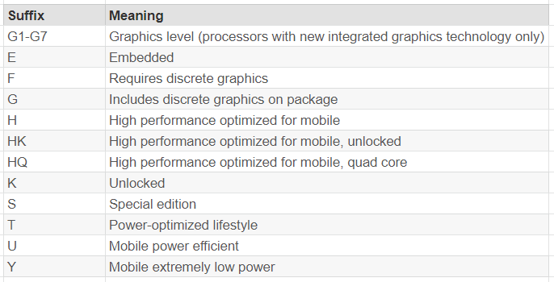

Welcome to the World of CPUs
Central Processing Unit (CPU) is the brain of any computing device, which controls and executes the instructions of a program. In this section, we will explore the different types of CPUs and their features.
The Difference of Generation
Performance
With more cores and higher frequencies
Power Efficiency
With better power management and efficiency
Cost
Will be more costly for newer generation and also with hardware like motherboards
Features
Might offer different instruction set, hardware virtualization and other capabilities
CPU Generation of Intel
- For brand modifiers, a higher modifier number means better performance. i9 would be the best performance option, followed by i7, i5 and i3. - For generation indicator, the latest generation right now is the 13th gen, latest generation is expected to have better performance, more cores, and higher frequencies. - For the SKU Numeric digits, a higher SKU generally has more features and better performance. - The meaning of the product line suffix is listed below:
CPU Generation for AMD
- Alike Intel, for the identifier, a higher number means better performance, ordered by Ryzen7, Ryzen5, Ryzen.
- The latest generation for AMD, Ryzen series would be 7000.
- SKU is also very similar to Intel, expected higher the SKU, the better the performance.
- For the Suffix, it is listed below: